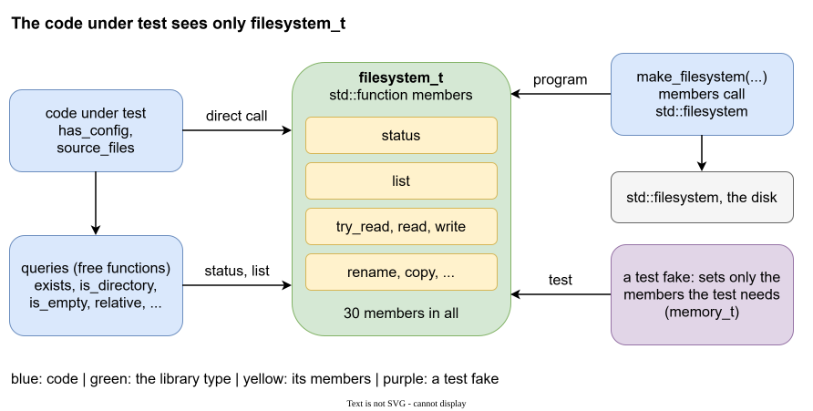

A filesystem you can replace in a test¶
The problem¶
std::filesystem is a set of free functions. Code that calls them talks to the real disk, and there is no place to put anything between the code and the disk.
bool has_config(const std::filesystem::path& dir)
{
return std::filesystem::is_regular_file(dir / "config.txt");
}
A test of this function needs a real directory with a real file. That has a price:
- Tests touch the disk. They need a temporary directory, clean-up, and care about parallel runs.
- Failures are hard to make. To test "permission denied" or "disk is full" you must arrange them on a real machine.
- Errors are everywhere. Most functions throw
std::filesystem::filesystem_error, and every function has a second overload withstd::error_code. Each call site picks one of two styles and repeats it. - No view of the calls. You cannot ask "which paths did this code touch?" without a debugger.
- The bytes of a file are not covered.
std::filesystemknows about files, but not about reading or writing them. The code that reads a file usesstd::ifstream, which is another thing a test cannot replace.
What the library does¶
virtual_filesystem::filesystem_t is a struct. Every member is a std::function, and every member is one operation that a filesystem must answer: status, file_size, rename, list, read, write and so on.
Production code takes a const filesystem_t& and calls its members:
bool has_config(
const virtual_filesystem::filesystem_t& filesystem,
const virtual_filesystem::path_t& dir
)
{
return virtual_filesystem::is_regular_file(filesystem, dir / "config.txt");
}
In the program the filesystem is made from std::filesystem:
const auto filesystem = virtual_filesystem::make_filesystem({});
In a test any member is replaced by a function that answers what the test needs:
virtual_filesystem::filesystem_t filesystem;
filesystem.status = [](const virtual_filesystem::path_t&)
{
return std::filesystem::file_status{std::filesystem::file_type::regular};
};

What you get:
- A seam. The code under test sees
filesystem_tand does not know what is behind it. - A fake per member. A test sets only the members the code under test calls.
- One error policy.
make_filesystemcatchesfilesystem_errorand hands it to one function,on_error. The call does not throw unless that function does. - A log of calls. A
loggerfunction sees every call, with its paths, before it runs. - Rules that cannot disagree with a fake.
exists,is_directory,is_empty,relativeand the other queries are free functions built on the members. A fakestatuschanges what they answer. - File bytes.
try_read,readandwriteare members too, and acontent_filtercan change the bytes on the way in and out.
It is a thin layer. It adds no files and no state of its own: make_filesystem forwards each call to std::filesystem.
How this documentation is arranged¶
- Getting started: requirements, CMake and a first program.
- The guide:
- Replacing calls in a test: fakes, partial fakes and failing fakes.
- Errors and logging:
logger,on_errorand the value you get back. - Queries: the rules built on the members.
- Listing a directory:
listand its options. - File bytes and content_filter:
try_read,read,writeand the filter.
- Reference: every function, type and enumeration.